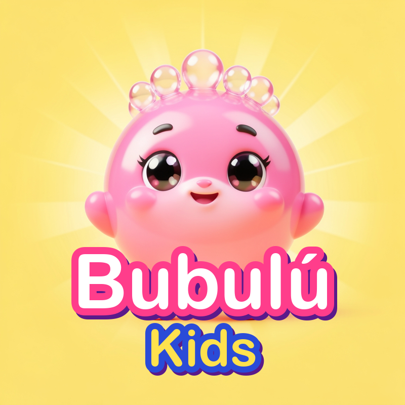

Política de privacidad
Última actualización: 19 de octubre de 2026
Esta política explica cómo funciona youtube-bot, la herramienta interna que usa el canal de YouTube Bubulú Kids para publicar sus videos. La herramienta la usa únicamente el dueño del canal; no es un servicio abierto al público.
Qué datos usa
- Con la autorización del dueño del canal, la herramienta accede a la API de datos de YouTube para subir videos al canal Bubulú Kids y leer información pública de videos de YouTube (títulos y cantidad de vistas) para elegir temas.
- Guarda un token de acceso de forma privada y cifrada, solo para poder publicar los videos del canal.
- No recopila, guarda ni vende datos de las personas que miran el canal, ni datos de niños. No usa cookies ni analítica propia en este sitio.
- No comparte información con terceros, salvo la que YouTube y Google procesan para publicar los videos.
Servicios de Google y YouTube
youtube-bot usa los Servicios de API de YouTube. Al usarla se aplican las Condiciones del Servicio de YouTube y la Política de Privacidad de Google. El dueño del canal puede revocar el acceso en cualquier momento desde la configuración de seguridad de su cuenta de Google.
Los videos del canal están marcados como contenido para niños, por lo que YouTube limita la recopilación de datos y desactiva funciones como los comentarios.
Contacto
Para cualquier consulta sobre esta política, escríbenos a través de la sección «Acerca de» del canal de YouTube.